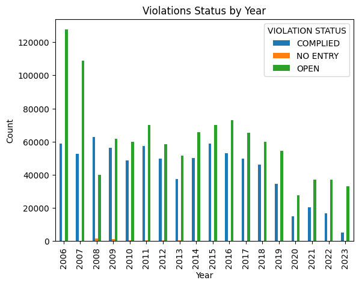
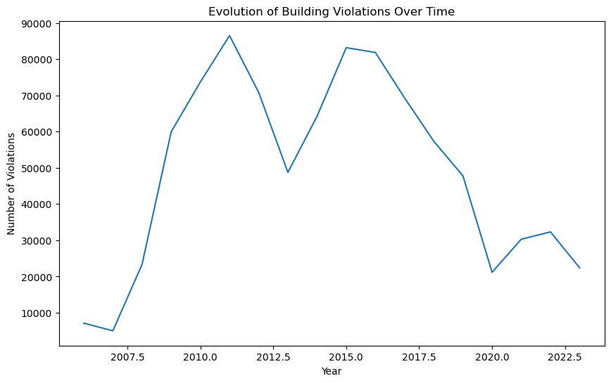
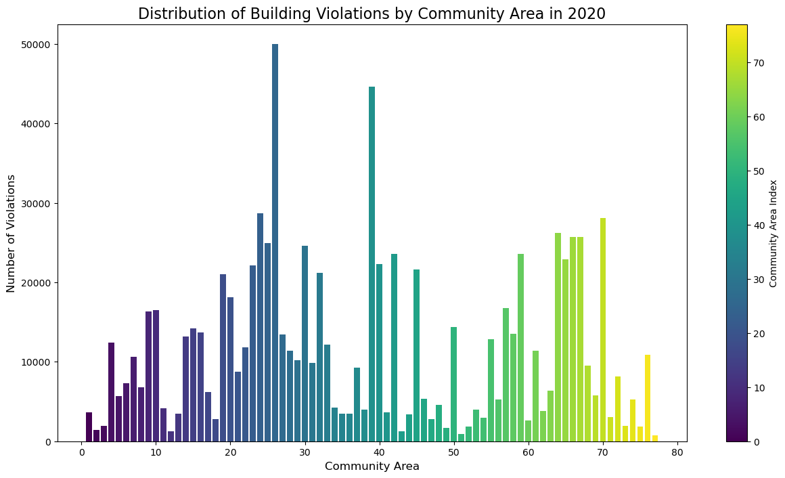
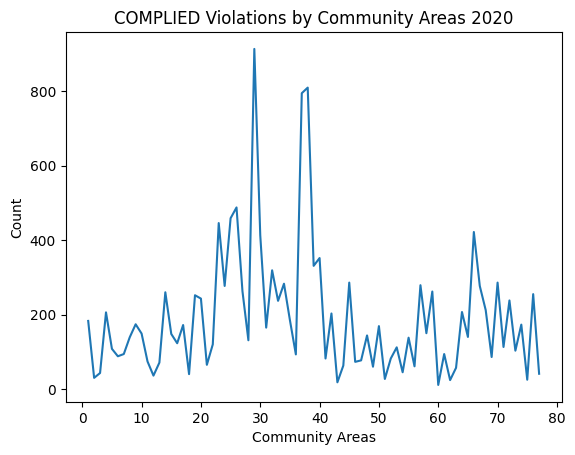
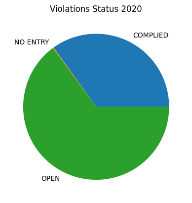
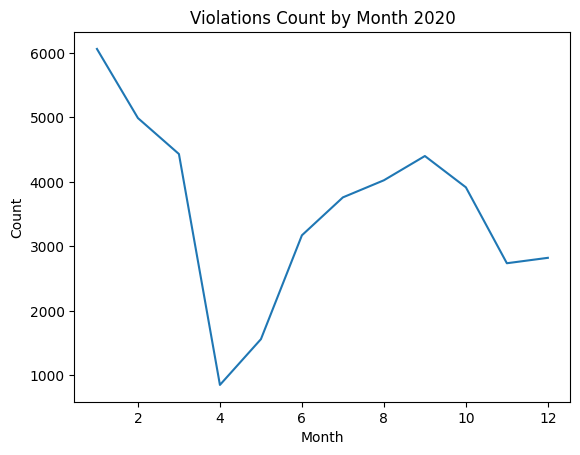
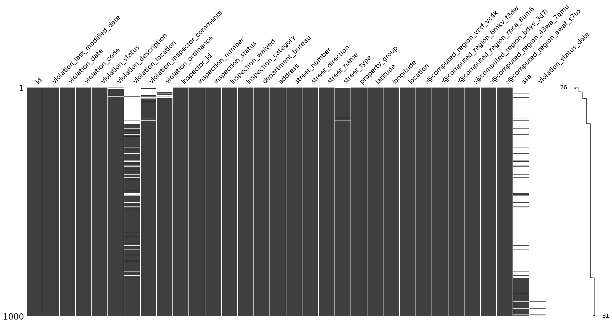
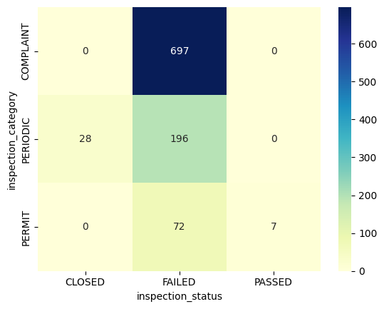

Time-centric visualizations reveal evolving data trends, enabling users to discern temporal patterns and anomalies. The initial summary spans 17 years, highlighting fluctuations in violation counts without a consistent linear trend. Notably, the significant disparity in 2006 suggests administrative unpreparedness, but over time, both open and resolved violations decrease, indicating a more mature approach to the issue.
Space-based visualization


The Space-based visualization reveals a concentrated distribution of building violations in Community Areas 20 to 40, notably consistent in 2020. Both visualizations underscore the stability of building violation distribution throughout Chicago's Community Areas from 2006 to 2020. The majority of cases are concentrated in Community Areas 20 to 40, indicating a persistent trend over the years.
Space+Time-based visualization
The visualization is valuable for its comprehensive depiction of violation distribution across community areas, offering both spatial and temporal insights, particularly in 2020. The presence of multiple spikes in certain community areas indicates a higher frequency of ignored violations, suggesting potential challenges for the administration in managing the substantial volume and signaling a need for additional regulatory measures.
Distributions


The generated pie chart illustrates the distribution of violation statuses for a specific year, emphasizing the number of open cases. The second chart highlights the monthly violation count for the same year, collectively suggesting a decrease in overall violations with limited attention to resolving issues. This implies a potential administrative focus on addressing underlying causes rather than promptly resolving existing problems.


With the dataset focusing on the CIty of Chicago's inspection records, many fields are necessary for a complete and full record. One of the challenges that occurs for inspectors and investigators is aiming for completeness, and we found that many of the fields seen here in this visualization are missing a significant amount of data, likely due to the need for more inspectors (with many vacant inspection positions under the City's administration).The second visualization follows a similar idea in exploring the completeness and spread of a sample of data, albeit through the lens of the types of inspections versus their status(es). We found that all complaint inspection types failed, and the only type (of 3) to have passing inspections are permit inspections.
Comparison
Given the continuous nature of our data across various regions, meaningful comparison proves challenging, leading to the adoption of a heatmap for an intuitive overview. The heatmap's color scheme is determined by density values, with the downtown area showing a higher concentration of violations in shades transitioning from blue to red, aligning with expectations of extensive construction activity in this prominent business district. Violations decrease moving away from downtown.